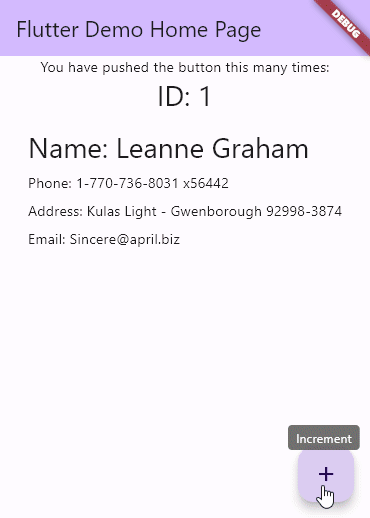
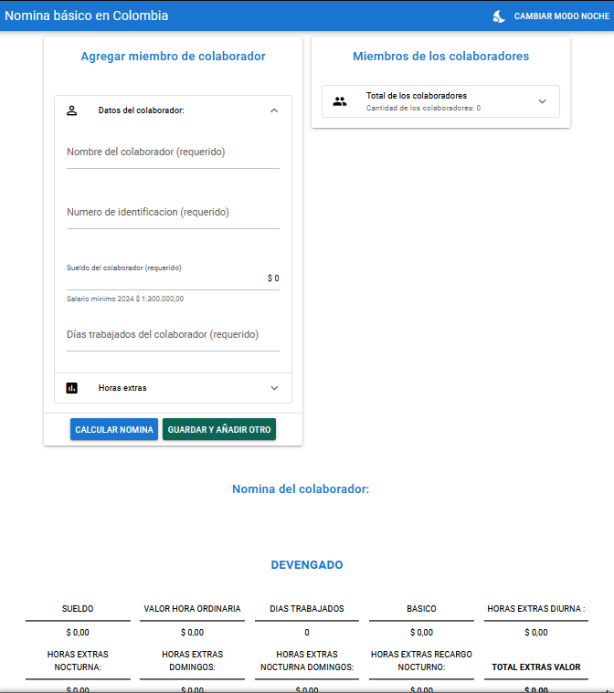
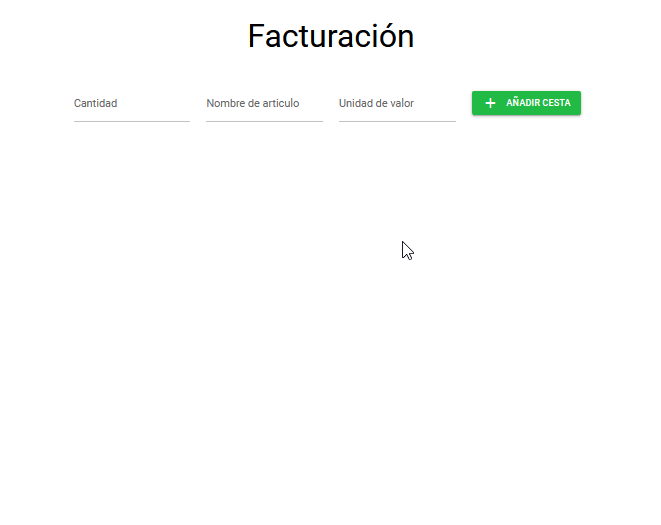
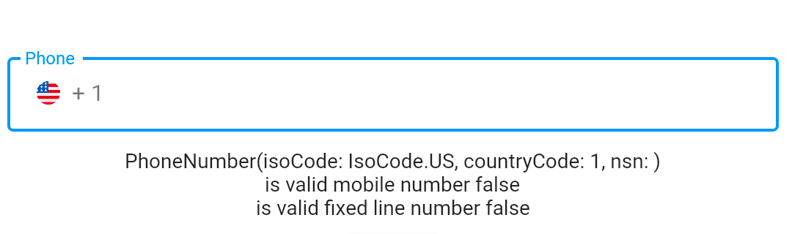
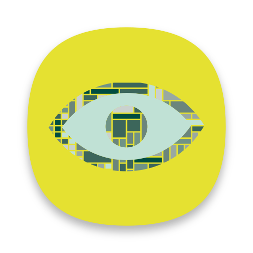

Dự án
Side Projects Link to heading
I’ve done a handful of side projects over the past few years. Here are some of the ones that I’m proud of.
14 Items of projects:
|
|
|
|
|
|---|---|---|---|
| Package Dart |
exception_handler A Dart package for streamlined API handling and robust exception management in Flutter apps. |
* Flutter * Dart * GitHub Actions * Coveralls |
 |
| App mobile |
clean-flutter-app (Source code) Application made in Flutter using TDD, Clean Architecture, Design Patterns and SOLID principles. |
* Flutter * Dart * GitHub Actions |
|
| Web |
nomina Project focused on calculating basic payroll, taking into account the regulations in place in 2024 for Colombia. |
* Framework Quasar v2 * Vue.JS 3 * JavaScript * HTML * CSS * GitHub Actions |
 |
| Web |
facturacion Basic invoicing project |
* Framework Quasar v1 * Vue.JS 2 * JavaScript * HTML * CSS * GitHub Actions |
 |
| Web App Full Stack |
Demo API Express & Vue.js (Source code) |
* TypeScript * Express * REST API * Vue.JS 2 * JWT * Date-fns * Fast CSV * mongoose * HTML * CSS * Docker * GitLab CD/CI |
|
| Web |
Personal Web Blog |
* HUGO * JavaScript * HTML * CSS * GitHub Actions * GitHub Pages |

|
| Documentation |
solid-example Fundamental SOLID Examples |
* Dart * TypeScript |
|
| Documentation |
Wiki AHID Technical Installation Manual for Project New Reset A.I.H.D. Wiki. |
* Markdown * GitBook |
|
| Documentation |
guia-capacitacion-aihd Training Guide: Project NEW RESET A.I.H.D. |
* Markdown * GitBook |
|
| Documentation |
awesome stars A curated list of my GitHub stars by stargazed. |
* GitHub Actions |
|
| Essay |
'¿Cómo se escucha el silencio?' (Colombian Sign Language Edition with Spanish subtitles) |
And you can look at my real-time profile of technical skills, which includes more projects and demos.
Contributions Link to heading
I’ve contributed to these open source projects.
15 Items of contributions:
|
|
|
|
|
|
|---|---|---|---|---|
|
* Dart * GitHub Actions * Coveralls |
||||
|
* Dart * GitHub Actions * Coveralls |
||||
|
* Flutter * Dart * GitHub Actions |
⭐️ 104 stars |  | ||
|
* TypeScript * JavaScript * GitHub Actions |
⭐️ 56 stars |  | ||
|
* Markdown * GitHub |
⭐️ 1672 stars | |||
|
* Flutter * Dart * GitHub Actions |
⭐️ 201 stars 📥 +100 downloads |  | ||
|
* Flutter * Dart * GitHub Actions |
⭐️ 15 stars 📥 11 downloads | |||
|
* Dart * GitHub Actions |
⭐️ 16 stars 📥 30 downloads | |||
|
* JavaScript * JSON |
⭐️ 2673 stars 📥 +70.000 downloads | |||
|
* Crowdin * JSON |
⭐️ 12.4M stars 📥 +1000M downloads |
|
||
|
* Transifex * JSON |
⭐️ +4200 stars 📥 +500K downloads | |||
|
* Transifex * JSON |
|
|||
|
* JavaScript * JSON |
⭐️ 54 stars | |||
|
* PHP * JavaScript * JSON |
⭐️ +24K stars |
And also, you can look at my CV or Linkedln, which includes brief descriptions of client projects.